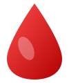

A College-Level Web Development BCA Academic Project
Student ID: 241306064 | Technology: PHP + MySQL + Bootstrap 5
JeevanRakt Presentation
Problem statement, need for digital blood donor management & core objectives.
Emergency patient matchmaking, blood bank stock tracking & donor screening.
PHP 8 (PDO), MySQL relational database, HTML5, CSS3, Bootstrap 5 & XAMPP.
Donor registration, public availability directory, blood requests & admin controls.
Automated questionnaire rules delivering 🟢 Proceed, 🟡 Review, or 🔴 Deferred status.
Summary of project outcomes, educational impact & future roadmap.
Project Overview
Use Cases
Allows local health clinics and small blood banks to track available units, maintain low-stock alerts, and fulfill emergency patient orders without expensive software.
Connects patients needing immediate transfusions with nearby voluntary donors filtered by blood group, city location, and active status.
Saves staff time by collecting donor symptoms, medical history, procedures, and alcohol intake before blood bank laboratory testing.
Provides database logging of donation histories, screening records, stock adjustments, and printable summary reports for academic evaluation.
Technical Architecture
Handles server-side execution, session authentication, input sanitization, screening rules engine, and SQL injection prevention via PDO prepared statements.
Stores admin credentials, user accounts, donor profiles, screening logs, donation transactions, blood stock units, and patient request records.
Clean student project visual style with light blue containers, dark blue navbar, blood red buttons, custom SVG graphics, and responsive components.
Cross-platform local web server environment running Apache HTTP Server and MariaDB MySQL database for local deployment.
System Capabilities
Project Wrap-up